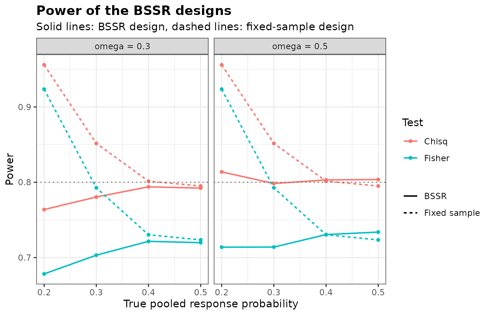
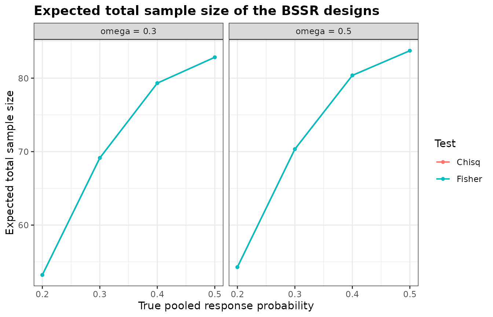

Comparing Designs with BinaryGridBSSR
Gosuke Homma
2026-10-05
Source:vignettes/bbssr-design-grid.Rmd
bbssr-design-grid.RmdOne data frame for many designs
Choosing a design means comparing several candidates, for example
tests, timings of the interim analysis or assumed effects, over the same
scenarios. BinaryGridBSSR() takes the candidates as the
rows of a data frame, evaluates each with BinaryPowerBSSR()
at common true pooled response probabilities, and returns one data frame
with a row for each design and each probability.
The columns of the design data frame are arguments of
BinaryPowerBSSR(). Arguments shared by all designs are
given through ..., and an argument may not appear in both
places. Below, two tests are crossed with two timings of the interim
analysis.
design <- expand.grid(Test = c('Chisq', 'Fisher'), omega = c(0.3, 0.5),
stringsAsFactors = FALSE)
design
#> Test omega
#> 1 Chisq 0.3
#> 2 Fisher 0.3
#> 3 Chisq 0.5
#> 4 Fisher 0.5
grid <- BinaryGridBSSR(design, p = seq(0.2, 0.5, by = 0.1), Delta.A = 0.3,
N1 = 40, N2 = 40, r = 1, alpha = 0.025, tar.power = 0.8,
ss.method = 'standard')
head(grid)
#> design Test omega N1 N2 n1.interim n2.interim Delta.T p p1 p2
#> 1 1 Chisq 0.3 40 40 12 12 0.3 0.2 0.35 0.05
#> 2 1 Chisq 0.3 40 40 12 12 0.3 0.3 0.45 0.15
#> 3 1 Chisq 0.3 40 40 12 12 0.3 0.4 0.55 0.25
#> 4 1 Chisq 0.3 40 40 12 12 0.3 0.5 0.65 0.35
#> 5 2 Fisher 0.3 40 40 12 12 0.3 0.2 0.35 0.05
#> 6 2 Fisher 0.3 40 40 12 12 0.3 0.3 0.45 0.15
#> power.BSSR power.TRAD E.N SD.N N.q25 N.q50 N.q75 P.N.max
#> 1 0.7637930 0.9558550 53.21531 14.139995 48 56 64 0.001538681
#> 2 0.7804500 0.8516117 69.13978 12.257967 64 70 80 0.060350142
#> 3 0.7939654 0.8015039 79.32101 8.020970 76 80 86 0.298488859
#> 4 0.7922767 0.7950585 82.84026 4.901025 80 84 86 0.479237344
#> 5 0.6784007 0.9235441 53.21531 14.139995 48 56 64 0.001538681
#> 6 0.7032579 0.7926367 69.13978 12.257967 64 70 80 0.060350142Each row holds the index design, the columns of the
design data frame, the initial and interim sample sizes, the true
effect, the true response probabilities, the power of the re-estimation
design and of the fixed-sample design, and the expected value, standard
deviation and quartiles of the final total sample size.
P.N.max is the probability that the final total takes the
largest value that any interim outcome leads to.
Summaries and plots
summary() gives one row per design, with the range of
the power over the scenarios and the largest expected total sample
size.
grid.summary <- summary(grid)
grid.summary
#> design Test omega N1 N2 n1.interim n2.interim Delta.T power.BSSR.min
#> 1 1 Chisq 0.3 40 40 12 12 0.3 0.7637930
#> 2 2 Fisher 0.3 40 40 12 12 0.3 0.6784007
#> 3 3 Chisq 0.5 40 40 20 20 0.3 0.7983571
#> 4 4 Fisher 0.5 40 40 20 20 0.3 0.7138677
#> power.BSSR.max power.TRAD.min power.TRAD.max E.N.max
#> 1 0.7939654 0.7950585 0.9558550 82.84026
#> 2 0.7216303 0.7235412 0.9235441 82.84026
#> 3 0.8138014 0.7950585 0.9558550 83.73642
#> 4 0.7338985 0.7235412 0.9235441 83.73642With Fisher’s exact test in the final analysis the power of the
re-estimation design stays at or below 0.734. The sample size is
re-estimated here by the normal approximation of
ss.method = 'standard', which does not depend on the test,
and Fisher’s test needs more patients than the chi-squared test to reach
the same power. The exact re-estimation of
ss.method = 'exact' uses the exact power of the test of the
final analysis instead.
plot() draws the power or the expected total sample size
against the true pooled response probability, with one colour per value
of a column and, optionally, one panel per value of another.
plot(grid, colour.by = 'Test', facet.by = 'omega')
plot(grid, what = 'E.N', colour.by = 'Test', facet.by = 'omega')
Initial sample sizes from a planning proportion
Instead of the columns N1 and N2, a design
can give a pooled planning proportion p.plan. The planning
proportions of the two groups are then obtained from p.plan
and the assumed effect, as in the re-estimation, and the initial sample
sizes are those of BinarySampleSize() with the test, level,
target power and allocation ratio of the design, the method
ss.method of the re-estimation and its rounding rule. With
type1 = TRUE the largest type I error rates of each design
and of its fixed-sample counterpart are added to the attribute
designs, as computed by
BinaryTypeIErrorBSSR().
planned <- data.frame(Delta.A = c(0.2, 0.25, 0.3), p.plan = 0.35)
grid.plan <- BinaryGridBSSR(planned, p = seq(0.2, 0.5, by = 0.1), omega = 0.5, r = 1,
alpha = 0.025, tar.power = 0.8, Test = 'Chisq',
ss.method = 'standard', type1 = TRUE)
attr(grid.plan, 'designs')
#> design Delta.A p.plan N1 N2 n1.interim n2.interim Delta.T TIE.BSSR
#> 1 1 0.20 0.35 89 89 45 45 0.20 0.03001093
#> 2 2 0.25 0.35 56 56 28 28 0.25 0.02845298
#> 3 3 0.30 0.35 39 39 20 20 0.30 0.02728643
#> theta.BSSR TIE.TRAD theta.TRAD
#> 1 0.9189958 0.02699911 0.40503913
#> 2 0.5000000 0.02588123 0.19815741
#> 3 0.5623154 0.02937611 0.09356712Designs specified in different ways
A missing value in a column means that the argument is not given for
that design. Designs whose interim analysis is given by
omega and designs whose interim sample sizes are given by
the columns n1.interim and n2.interim can
therefore share one data frame.
mixed <- data.frame(omega = c(0.5, NA), n1.interim = c(NA, 12), n2.interim = c(NA, 12))
grid.mixed <- BinaryGridBSSR(mixed, p = 0.35, Delta.A = 0.3, N1 = 40, N2 = 40, r = 1,
alpha = 0.025, tar.power = 0.8, Test = 'Chisq',
ss.method = 'standard')
grid.mixed[, c('design', 'n1.interim', 'n2.interim', 'power.BSSR', 'E.N')]
#> design n1.interim n2.interim power.BSSR E.N
#> 1 1 20 20 0.7992496 76.20709
#> 2 2 12 12 0.7878232 75.01443A true effect other than the assumed one
The power is evaluated at the assumed effect of each design unless
Delta.T gives the true effect, either as an argument for
all designs or as a column of the design data frame.
grid.smaller <- BinaryGridBSSR(design, p = seq(0.2, 0.5, by = 0.1), Delta.T = 0.2,
Delta.A = 0.3, N1 = 40, N2 = 40, r = 1, alpha = 0.025,
tar.power = 0.8, ss.method = 'standard')
summary(grid.smaller)
#> design Test omega N1 N2 n1.interim n2.interim Delta.T power.BSSR.min
#> 1 1 Chisq 0.3 40 40 12 12 0.2 0.4348320
#> 2 2 Fisher 0.3 40 40 12 12 0.2 0.3309078
#> 3 3 Chisq 0.5 40 40 20 20 0.2 0.4592584
#> 4 4 Fisher 0.5 40 40 20 20 0.2 0.3448173
#> power.BSSR.max power.TRAD.min power.TRAD.max E.N.max
#> 1 0.4561124 0.4576277 0.6322417 82.64734
#> 2 0.3655610 0.3682412 0.5339860 82.64734
#> 3 0.4669846 0.4576277 0.6322417 83.62765
#> 4 0.3740034 0.3682412 0.5339860 83.62765Errors and warnings raised while a design is evaluated are prefixed
with the index of the design, and verbose = TRUE reports
the progress. The p-values of each test are kept for the rest of the
session, so designs that share sample sizes are evaluated faster after
the first one.